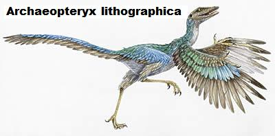
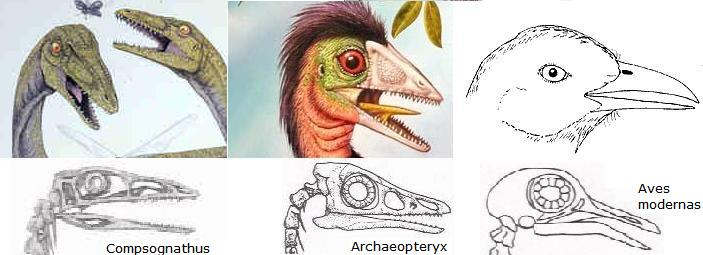
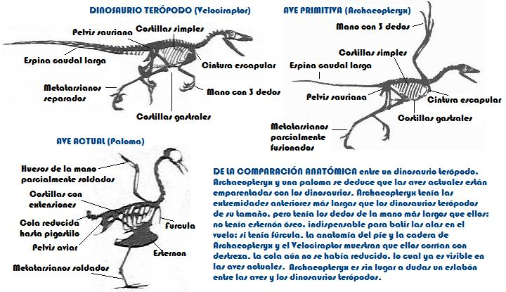
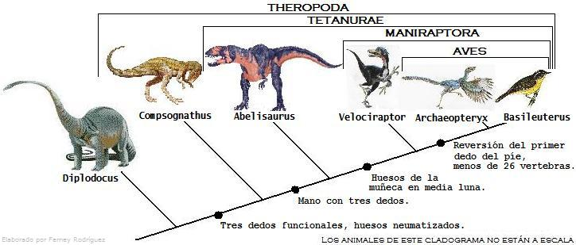
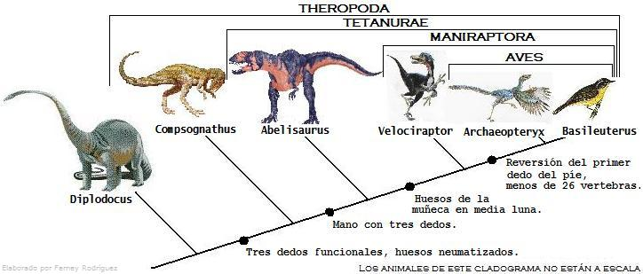
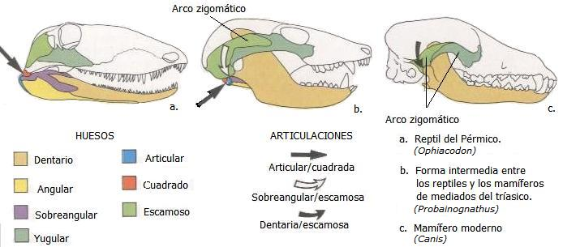
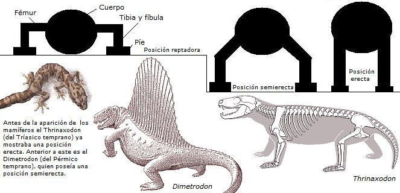
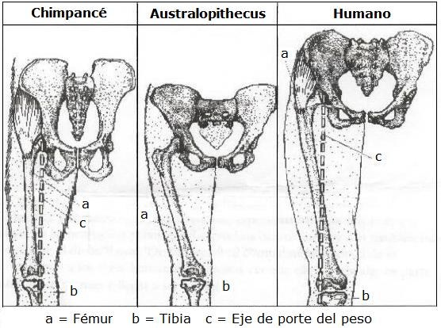
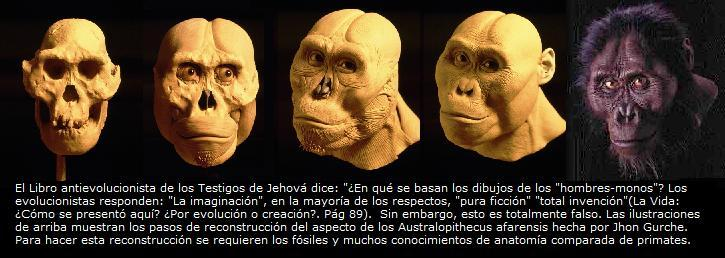

Analizar todos los argumentos presentados por el libro “La vida: ¿Cómo se presentó aquí? ¿Por evolución o por creación?” resultaría muy largo, sin embargo, se presentan respuestas claras a muchas de las objeciones hechas por los Testigos de Jehová a la Paleontologia.
La prueba de los fósiles
“La teoría de (evolución) de Darwin siempre ha estado estrechamente relacionada con prueba procedente de los fósiles, y probablemente la mayoría de la gente supone que los fósiles suministran una parte muy importante del argumento general que se presenta a favor de las interpretaciones darvivianas de la historia de la vida. Por desgracia esto no es rigurosamente verdadero. ¿Por qué no? El Bulletin pasó a decir que Darwin “quedó desconcertado por el registro fósil porque no presentaba la apariencia que él había predicho que presentaba (…) en aquel tiempo, tal como ahora, el registro geológico no ha presentado una cadena delicada de evolución lenta y progresiva”
—[WBTS1985], p. 20. Énfasis añadido.
En realidad Darwin se preocupó por la pobreza del registro fósil, pero cada hallazgo paleontológico es un paso en firme para superar tal dificultad. Algunas respuestas a estas críticas son:
La fosilización es un acontecimiento extraño en la naturaleza. La mayoría de los restos de los organismos son degradados por los microorganismos, solo algunos que caen en condiciones apropiadas (enterramiento en sedimentos y ausencia de oxígeno) tienen una probabilidad mayor de llegar a fosilizarse.
Muchos de los cambios macroevolutivos (aquellos que generan nuevas especies) se dan en poblaciones aisladas, en un periódo de tiempo geológicamente corto por lo que, sumado a las limitaciones mencionadas en el punto anterior, hacen del resgistro fósil “un archivo de extrema imperfección” (como lo apuntó Darwin en El Origen)

El registro fósil hoy se encuentra mucho más completo que en los días de Darwin. Esto lo sabe cualquier persona con interes en la paleontología.
Hoy los científicos no mantienen la idea de una “evolución lineal”, sino que tienen en cuenta que la evolución puede generar muchas ramas a partir de un ancestro (evolución diversificadora), además que los ritmos de evolución no son neceariamente iguales en todos los grupos de organismos, por lo que no necesariamente sería muy lenta o gradual. Este punto en la actualidad es motivo de análisis y discusión científica.
Por todo lo anterior se puede concluir que la argumentación de los Testigos de Jehová omite adrede que Darwin explicó esta dificultad como resultado de la imperfección del registro fósil y que mienten al hacer creer que el registro fósil se encuentra en las mismas condiciones que en el siglo XIX.
Medias verdades sobre la evolución de las aves
En 1861, tan solo dos años después de la publicación de “El origen de las especies”, apareció un fósil que a los evolucionistas les cayó como anillo al dedo; Se trataba del fósil de un ave del tamaño de un cuervo que recibió el nombre de Archaeopteryx lithographica (Archaeopteryx significa “pluma antigua”). Este fósil se clasificó en el grupo de las aves ya que mostraba claras marcas de plumas en su cuerpo, sin embargo, Archaeopteryx era un ave muy particular pues tenía varias características que no vemos en las aves de hoy tales como la presencia de dientes, una cola larga y huesuda, y extremidades anteriores terminadas en tres garras. Tales características lo hacen más cercano a unos dinosaurios pequeños, carnívoros y moradores del suelo que recibieron el nombre de manirraptores.
El naturalista Thomas Henry Huxley, contemporáneo de Darwin, notó que este fósil era un excelente ejemplo de transición evolutiva entre dos grandes grupos de organismos, los reptiles y las aves, además sugirió que las aves están cercanamente emparentadas con los dinosaurios al comparar la anatomía de Archaeopteryx con la de Compsognathus, un pequeño dinosaurio hallado en el mismo depósito del ave fósil.
En la actualidad no hay ningún biólogo serio que dude que Archaeopteryx es una clara evidencia de la relación evolutiva entre los reptiles y las aves, y la gran mayoría de los paleontólogos y ornitólogos actuales consideran que las aves descienden de pequeños dinosaurios terópodos, tal como lo creyera Huxley hace 150 años. En la última década se ha reforzado la hipótesis del parentesco de las aves con los dinosaurios terópodos manirraptores ya que se han hallado nuevos y abundantes fósiles provenientes de China. No obstante, los creacionistas no pueden admitir que exista una evidencia tan arrolladora y en el libro creacionista de los testigos de Jehová se puede leer:
“Hubo un tiempo en que los evolucionistas creían que arqueopteris (Archaeopteryx), que significa “ala antigua” o “ave antigua”, era un eslabón entre el reptil y el ave. Pero ahora hay muchos que no creen eso. Los restos fosilizados de arqueopteris poseen las plumas perfectamente formadas sobre alas de diseño aerodinámico que hacía posible el vuelo. Los huesos de sus alas y de sus piernas eran delgados y huecos. Sus supuestos rasgos de reptil se hallan en aves de hoy”
—[WBTS1985], pág.79 & 80. Énfasis añadido.
En esta cita vemos que los Testigos de Jehová mezclan mentiras y medias verdades. ¿Qué es eso de que “Hubo un tiempo en que los evolucionistas creían que Archaeopteryx era un eslabón entre el reptil y el ave”?. ¿Acaso los paleontólogos y ornitólogos actuales no lo creen? Claro que si. Esta afirmación tiene por objeto engañar al lector.
Ahora, ¿Es verdad que las características reptilianas de Archaeopteryx están presentes en las aves de hoy? Una revisión a la anatomía de este fósil comparada con la de un ave actual y un dinosaurio terópodo darán la última palabra.
Dientes
La presencia de dientes en Archaeopteryx es un carácter particular de las aves primitivas, más parecidas a los dinosaurios y que no encontramos en las aves actuales. Los Testigos de Jehová mienten al afirmar de Archaeopteryx que “sus supuestos rasgos de reptil se hallan en aves de hoy” pues en el presente las aves carecen de dientes. El registro fósil muestra que esto no era así hace 150 millones de años.
Larga espina caudal
La cola de las aves actuales está reducida a unas pocas vertebras que reciben el nombre de pigóstilo, de la cual salen las plumas caudales. Sin embargo, Archaeopteryx tenía una cola larga y huesuda, similar a la de un dinosaurio terópodo. en la cual se unían las plumas de manera simétrica y la cual habría de ayudarle a mantener el equilibrio cuando corria o caminaba. La espina caudal larga de Archaeopteryx NO está presente en las aves actuales. Esto es evidente al comprar los esqueletos. ¿Pero por qué los Testigos de Jehová omitieron esto al afirmar que “sus supuestos rasgos de reptil se hallan en aves de hoy”?. Simple. No les conviene.
Mano con tres dedos separados
Archaepteryx tenía los tres dedos de la mano móviles. Estos eran largos —más largos que los del dinosaurio Compsognathus — estos NO estaban soldados como en las aves modernas. Nuevamente los Testigos de Jehová omiten este dato en su análisis porque de hacerlo se revelaría el parentesco de las aves con los dinosaurios.

Costillas gastrales
Archaeopteryx poseía una serie de costillas gastrales muy delgadas ubicadas en la parte ventral del cuerpo y que no estan sujetas al resto del esqueleto. Esta característica fue muy común en los reptiles primitivos, de hecho el dinosaurio Compsognathus las tenía. Sin embargo, las aves actuales ya no las poseen. Nuevamente se ve que la afirmación hecha por lo Testigos de Jehová de que “sus supuestos rasgos de reptil se hallan en aves de hoy” es falsa.
¿Y el vuelo?
Archaeopteryx probablemente no era un buen volador. Esta ave primitiva carecía del esternón ancho y arqueado en el que se anclan los músculos del vuelo (los pectorales mayores y menores), además que carecía del “alula”, la cual es un penacho de pluma en uno de los tes dedos de la mano del ave que hace posible disminuir la velocidad en el momento del aterrizaje. Un tercer rasgo que hace suponer que Archaeopteryx era un mal volador era que sus húmeros (huesos del brazo) carecían de orificios para los sacos aéreos. Los sacos aéreos en las aves actuales se extienden desde los pulmones y alcanzan los huesos a través de orificios. Estos sacos aéreos potencian la capacidad respiratoria del ave al realizar una tarea con tanta demanda de oxígeno como lo es el vuelo.
La anatomía de Archaeopteryx también muestra características reptilianas que aún se mantienen en las aves actuales como la presencia de un anillo esclerótico que ayuda a mantener al ojo en suposición. Esta característica común entre aves y reptiles es un indicio de su parentesco evolutivo. Otro aspecto importante es que durante mucho tiempo los biólogos consideraron que la presencia de plumas en el cuerpo era un caracter distintivo de las aves, pero hoy se han encontrado fósiles de diferentes especies de dinosaurios terópodos no avianos con el cuerpo cubierto de plumas o protoplumas. Esto hace pensar que las plumas aparecieron primero a partir de la modificación de las escamas reptilianas como aislantes térmicos y luego adoptarían la función de permitir el vuelo. Todos estos análisis comparativos indican que las aves son dinosaurios terópodos, así como podemos afirmar que los humanos somos mamíferos.
 
Por último, debe tenerse en cuenta que la aparición de los organismos en el registro fósil es muy importante. El registro de fósiles muestra en orden cronológico a los antecesores de los dinosaurios, luego a los dinosaurios terópodos y a las aves en la Era Mesozoica. Nunca se han encontrado fósiles de aves en rocas de la Era Paleozoica o en tiempos aún más antiguos. Todo esto es consistente con la teoría evolutiva.
Mentiras y medias verdades sobre la evolución de los mamíferos
Al igual que con Archaeopteryx el libro antivolucionista de los Testigos de Jehová presenta información a medias sobre la evolución de los mamíferos y remata con una conclusión falsa:
“También sucede que los mamíferos tienen tres huecesillos en sus oídos, mientras que los reptiles tienen uno solo. ¿De donde vinieron los dos huesos “extra”? La teoría evolucionista intenta explicar esto del siguiente modo: Los reptiles tienen por lo menos cuatro huesos en la quijada inferior, mientras que los mamíferos tienen solo uno; por eso, cuando los reptiles se convirtieron en mamíferos, supuestamente hubo un ajuste de huesos; algunos de la quijada inferior del reptil se movieron al oído medio del mamífero para componer los tres huesos que hay allí, y mientras hacían esto, dejaron uno solo para la quijada inferior del mamífero. Sin embargo, el problema es esta línea de razonamiento, es que no hay ninguna evidencia fósil que la apoye. Es simplemente conjetura.”
—[WBTS1985], p. 80. Énfasis añadido.
En realidad el registro fósil sí existe y muestra cómo los huesos de la mandíbula de los cinodontes se transformaron en los del oído medio de los mamíferos. Los cinodontos fueron el grupo más exitoso de reptiles terápsidos, estos vivieron desde el Pérmico tardío hasta mediados del Jurásico, abarcando 80 millones de años. Estos organismos son los antecesores de los mamíferos. Dentro del grupo de los cinodontos se encuentran los fósiles de Procynosuchus, Thrinaxodon, Cynognathus, Massetognathus, Olygokypus, entre otros hallados más recientemente.
El registro de fósiles muestra la transición de reptiles a mamíferos especialmente con el cambio de la articulación entre la mandíbula y el cráneo. Inicialmente, la mandíbula del reptil y la de los primeros reptiles tipo mamíferos (los sinápsidos), como el Ophiacodon del Pérmico se componía de varios huesos, como el articular, el angular, el sobreangular y el dentario; En ellos el hueso articular formaba visagra con el hueso cuadrado del cráneo. Luego encontramos las formas intermedias, una de ellas el Probainognathus, que vivió a mediados del Tríasico mantiene un mínimo de la articulación articular-cuadrada y a la vez presenta el desarrollo de una articulación entre los huesos dentario y el escamoso. Los mamíferos actuales muestran sólo la articulación dentario-escamoso.
Los huesos articular, cuadrado y estribo se transformaron en el martillo, yunque y estribo de los mamíferos actuales. En el Probainognathus los huesos de la antigua articulación reptiliana están yuxtapustos de forma tal que indican el camino evolutivo que permitió una mejora en el oído medio de los mamíferos actuales. Este cambio se puede seguir al comparar los desarrollos embrionarios de reptiles y mamíferos actuales, puesto que los embriones de los mamíferos vivientes son morfológicamente muy parecidos a los de las formas fósiles ayudan a comprender como ocurrió este proceso evolutivo.

Tradicionalmente los mamíferos se definen como tales gracias a la presencia de pelo, glándulas mamarias y la asistencia maternal a los recién nacidos por un tiempo prolongado. Existen también caracteres osteológicos (o de la anatomía esquelética) que pueden utilizarse para reconocer a los mamíferos; entre las formas vivientes, esos rasgos se refieren, principalmente, al tipo de cráneo, el número y forma de los huesecillos del oído medio y la forma en que se artícula la mandíbula con el resto del cráneo. Sin embargo, en las formas fósiles sólo pueden considerarse los caracteres osteológicos, ya que la anatomía blanda no se conserva. Pero varios de los caracteres óseos han tenido largas transformaciones y llegado a su forma actual de modo gradual, lo cual hace más difícil y hasta arbitrario clasificar a un fósil como mamífero. Esta dificultad para clasificar a muchos de los mamíferoides mesozoicos como mamíferos o reptiles tipo mamífero es justamente lo que se esperaría encontrar en el registro fósil de haber ocurrido evolución.

A continuación se presenta otra crítica de los Testigos de Jehová a la evolución de los mamíferos:
“He aquí otro problema que tiene que ver con los huesos: Las piernas de los reptiles están colocadas a los lados del cuerpo, de modo que el vientre queda sobre el suelo o muy cerca de éste. Pero en los mamíferos las piernas están bajo el cuerpo y lo elevan del suelo.”
—[WBTS1985], p. 80.
Nuevamente hay un desconocimiento del registro fósil, o quizás peor, lo saben pero lo acultan adrede. Los reptiles mamiferoides ya presentaban una postura “mejorada” en la cual el cuerpo está elevado del suelo. Más aún, el registro fósil muestra que los “pelicosaurios”, los primeros sinapsidos o reptiles tipo mamífero, presentaban una posición semierecta, lo cual muestra una secuencia evolutiva en el cambio de postura.
Por último, debe hacerse hincapié que al organizar cronológicamente los fósiles de los más antiguos a los más recientes, se observan organismos cada vez con características cada vez más “mamiferoides” y menos “reptilianas”, lo cual es acorde con la teoría evolutiva. De ser cierta la creación se esperaría encontrar fósiles de caballos, humanos o ballenas en cualquier capa fosilífera, pero esto no es así.
Mentiras y medias verdades sobre la evolución de los primates y humanos
Sobre el primate Aegyptopithecus los Testigos de Jehová afirman:
“Esta criatura simiesca ha sido llamada antecesora nuestra. No existe prueba fósil de tal alegación”.
—[WBTS1985], p. 91.
Los simios del Viejo Mundo, también llamados catarrinos, tienen en su cráneo contacto entre los huesos frontal y esfenoides, además que conservan dos premolares en cada cuadrante de su boca. Los humanos al tener estas características se clasifican como primates catarrinos. Este grupo de simios tiene como uno de sus representantes más antiguos el fósil de Aegyptopithecus zeuxis, el cual fue hallado en el yacimiento egipcio de El Fayum, con una antigüedad estimada en 33 y 34 millones de años.
Los biólogos no afirman que el Aegyptopithecus sea el directo antepasado del hombre en el período Oligoceno, pero es innegable que en esta época apareció el ancestro de todos los catarrinos. La alegación de los Testigos de Jehová de que “no existe prueba de tal alegación” tiende a desinformar y a engañar si tenemos en cuenta que el registro fósil muestra que en el Oligoceno aparecieron por primera vez los catarrinos. Los científicos consideran que un grupo de organismos provienen de un mismo ancestro si poseen ciertas características distintivas. En el caso de los catarrinos se puede decir que todos ellos (macacos, langures, chimpancés, gorilas y humanos, entre otros) provienen de un simio que desarrolló por primera vez las características ya mencionadas en tiempos del Aegyptopithecus.

Sobre los Australopithecus afarensis los Testigos de Jehová afirman:
“Si hoy hubiera de hallarse vivos a algunos australopitecinos, serían puestos en los jardines zooológicos con los demás antropoides. Nadie los llamaría “hombres-monos”. Lo mismo es cierto de otros “primos” fósiles semejantes, como un tipo de australopitecino más pequeño llamado “Lucy”. De este espécimen Robert Jastrow dice: “Este cerebro no era grande en tamaño absoluto; tenía la tercera parte del tamaño de un cerebro humano”. Es obvio que este australopitecino era también sencillamente un “antropoide”.
—[WBTS1985], p. 94
Primero hay que afirmar que los australopitecos [1] eran simios con un cerebro similar en tamaño al de un chimpancé, pero lo que los hace interesantes es su postura bípeda. Ellos ya caminaban erguidos como nosotros. Eso precisamente los coloca como candidatos a ser ancestros de la humanidad.

Lucy, como se ha denominado el fósil hallado por Donald Johanson en los 70’s, caminó sobre la Tierra hace 3.6 m.a. Lucy perteneció a la especie Australopithecus afarensis de la cual se poseen fósiles provenientes de Laetoli (Tanzania) y Hadar (Etiopía) los cuales tienen un rango de edad comprendido entre 3.18 - 3.4 m.a. Sin embargo, los fósiles más antiguos de esta especie son los provenientes de Maka y Belohdelie (Etiopía) los cuales tienen una antigüedad de 3.9 m.a. La especie a la que pertenece Lucy es la mejor conocida de los australopitecos. Capacidad craneana comprendida entre 400 y 500 c.c; Brazos más largos que las piernas; marcado dimorfismo sexual; ángulo entre el fémur y la tibia más cerrado (parecido al hombre) lo que indica una postura bípeda; cadera más corta que la de los chimpancés pareciéndose más a la de los humanos, falanges curvas; series dentales en forma de UV intermedias entre la forma V de los humanos y la forma de U de los chimpancés. Caracteres como la presencia de falanges curvadas, los brazos proporcionalmente más largos que las piernas, etc., son reminiscencias de un antepasado común braquiador, y a la hora de interpretar la morfología, estos huesos sólo enmascaran el cambio definitivo: los Australopithecus ya presentaban las modificaciones para el bipedismo en el complejo pélvico-femoral.
Además de los restos fósiles se cuenta con las huellas de Laetoli (Tanzania), las cuales confirman la bipedación de Australopithecus afarensis. Las huellas fosilizadas sobre las cenizas del volcán Sadimán tienen una edad de 3.6 m.a. Estas huellas fósiles confirman el bipedismo de los australopitecos, el cual es una de las características de nuestro grupo evolutivo (la tribú de los hominini).
Cuando los Testigos de Jehová afirman “Es obvio que este australopitecino era también sencillamente un antropoide” omiten las características particulares que hacen de los australopitecos unos primates que fueron los precursores de la humanidad. El hecho que tuvieran un cerebro pequeño no niega que caminaban como nosotros. Además, el registro fósil posterior muestra los cambios en el aumento de la capacidad craneal. Es obvio que los líderes religiosos de esta secta son sencillamente engañadores.
La cita de Robert Jastrow que mencionan los Testigos de Jehová está sacada de contexto, pero se analizará más adelante en este escrito.
En la página 94 se puede leer:
“Donald Johanson también dijo: Los australopitecinos (…) no eran hombres.”
Es obvio que no eran humanos, por eso se les dió un nombre diferente, pero sus características dentales, craneales y del complejo pélvico-femoral indican que fueron nuestros antepasados. Nuestra conexión con los otros grandes simios.
“El anatomista Zuckermar escribió: “El cráneo australopitecino al compararse con el cráneo humano y el simiesco (de antropoide) parece arrolladoramente símico… no humano.”
—[WBTS1985], p. 94
La estrategía de los Testigos de Jehová es ver y reproducir solo lo que les conviene, el resto, si no les conviene, lo ignoran!
La memoria selectiva de los Testigos de Jehová también queda latente al tomar el caso del fraude de Piltdown [2] (Pág 90), aunque claro está, sin advertir que fueron los científicos quienes descubrieron y corrigieron el error.
Otro ejemplo de los enredos que causan los testigos de Jehová en su libro lo podemos hallar en la siguiente cita:
“Cierto evolucionista reconoce los siguiente: No tenemos prueba de cambio biológico en el tamaño, ni en la estructura del cerebro desde la aparición del Homo sapiens en el registro fósil”
Naturalmente que una vez tenemos la especie humana, el tamaño de nuestro cerebro no ha tenido un aumento tan significativo como se produjo antes. Curiosamente los autores de “La vida” no mencionan cual es tal evolucionista, pero es seguro que cualquier conocedor del registro fósil humano sabe que el tamaño del cerebro ha aumentado notablemente en los últimos tres millones de años.
En conclusión, el pretendido caracter científico del libro “La vida ¿Cómo se presentó aquí? ¿Por evolución, o por creación?” en matería de paleontológica y de biología evolutiva es nulo. Los argumentos esgrimidos dan la espalda a los hechos relevantes con la intensión de hacer ver pausible el creacionismo, tal actitud es absolutamente deshonesta y anticientífica.

Referencias
Notas
Volver a la sección Ciencias de los orígenes
Comentarios
Comments powered by Disqus